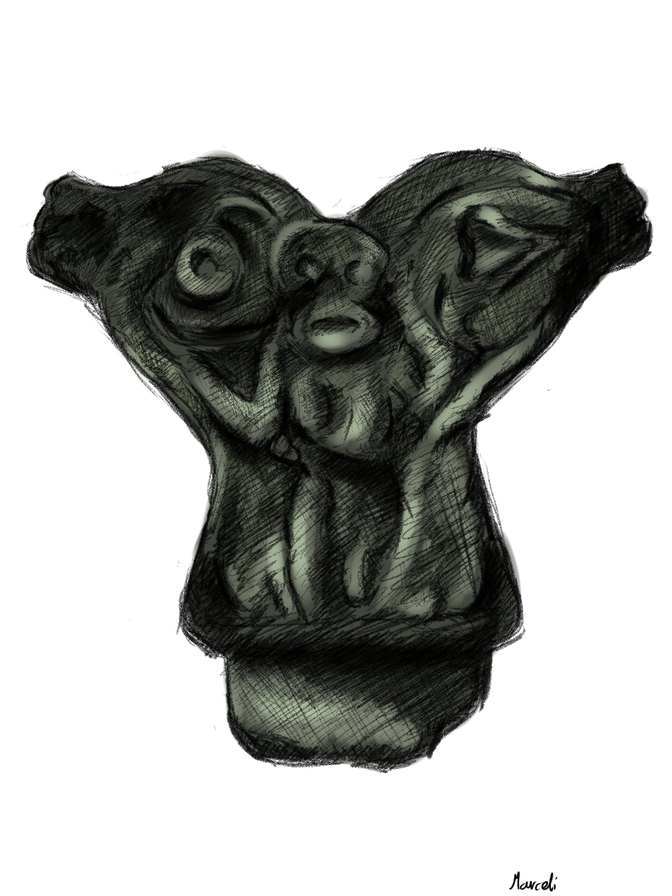
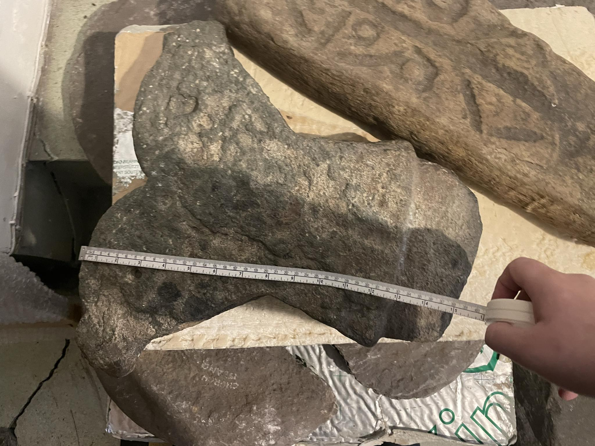
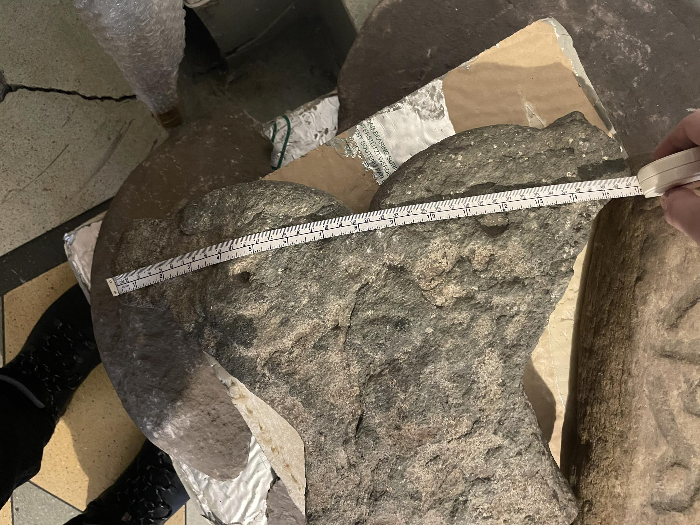
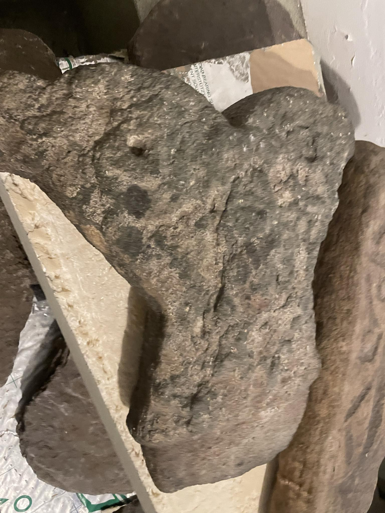
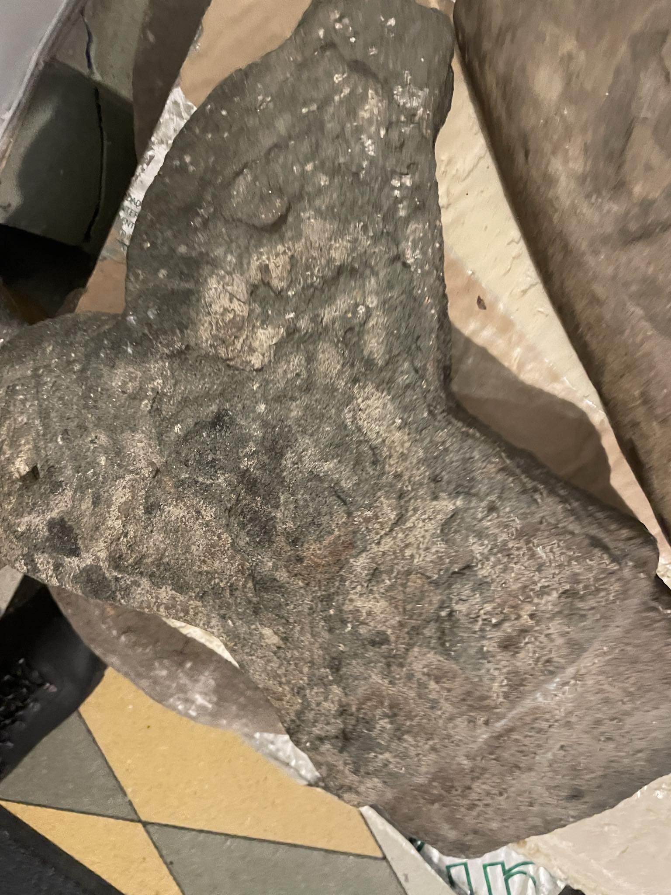
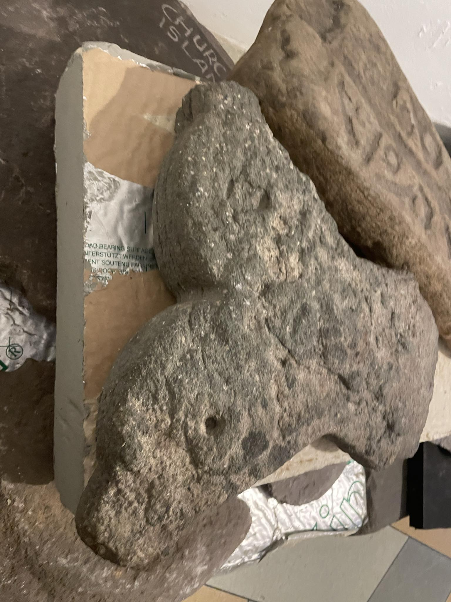
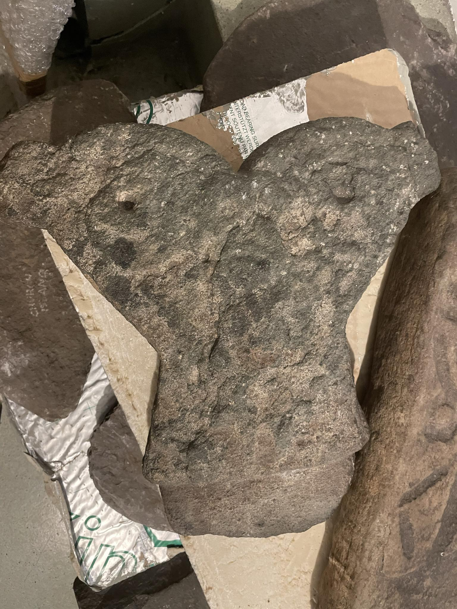

SEARCH
Finial- Church Island
Scanning project

|
Origin |
Church Island, Valentia Island, Co. Kerry |
|
Period |
c.1100 AD |
|
Dimensions |
Vertical height: 0.36m, Maximum width: 0.43m, thickness: 0.09m |
|
Weight |
c.15kg |
|
Material |
Sandstone |
|
Brief Description |
A finial is an element marking the top or end of an object, often fashioned to be a decorative feature. a distinctive section or ornament at the apex of a roof. |






In Ireland, there are early medieval monasteries dotted all over the island. Some lie in ruins, while some are still in use. Dating from the sixth century onwards, some monasteries played important roles within the community as places of teaching and worship. Others were strategically built in certain locations, such as woods or small islands, to allow the monks live quiet lives of spiritual reflection.
Church Island, a small, exposed island in Valentia Harbour, Co. Kerry, is home to an important early medieval monastic settlement. During excavations, undertaken by Michael J. O’Kelly in the 1950s, it was found that the island featured a small wooden church. This was replaced by a stone church, which still stands today. The excavations also found evidence of a round house, a clochán or bee-hive hut, and another rectangular house, and a cemetery. It is difficult to ascertain whether this site was a monastery or a community church which would have served the local area, though the burial of a woman on the island might suggest the latter.
Early wooden churches, such as the example on Church Island, were built of oak and had thatched roofs. In the annals the Irish word dairthech is commonly used to describe these building: dair means oak, while thech is an early version of teach, meaning house. When these buildings were replaced in stone some of their wooden features, though unnecessary in stone buildings, were copied as skeuomorphs.
The decorated stone finial from Church Island is a skeuomorph. It is a copy of the finial feature of a timber roof, where the two end-rafters were overlapped and joined together. The bottom section, or tenon, functioned as a means to hold the finial in place atop the stone roof. Such a finial served no practical function on a stone roof, so it seems that the builders of this church wished to create an architectural link with the form of the earlier wooden church.
The finial is made from micaceous sandstone, green in colour. It is one of the few finials of this type which features carved decoration. Although the carving is worn and difficult to distinguish, it is evident that the main figure is a person with raised arms. This is probably an orans, the term used to describe an early medieval position of prayer. On either side of the orans there are poorly preserved animal-heads and it has been suggested that these may represent seals of the type commonly found in the waters surrounding the island.